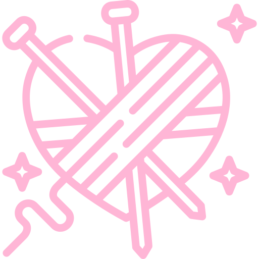
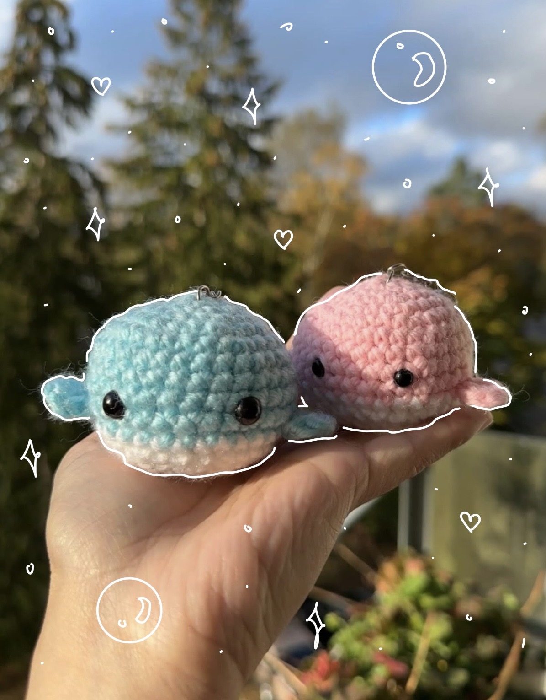
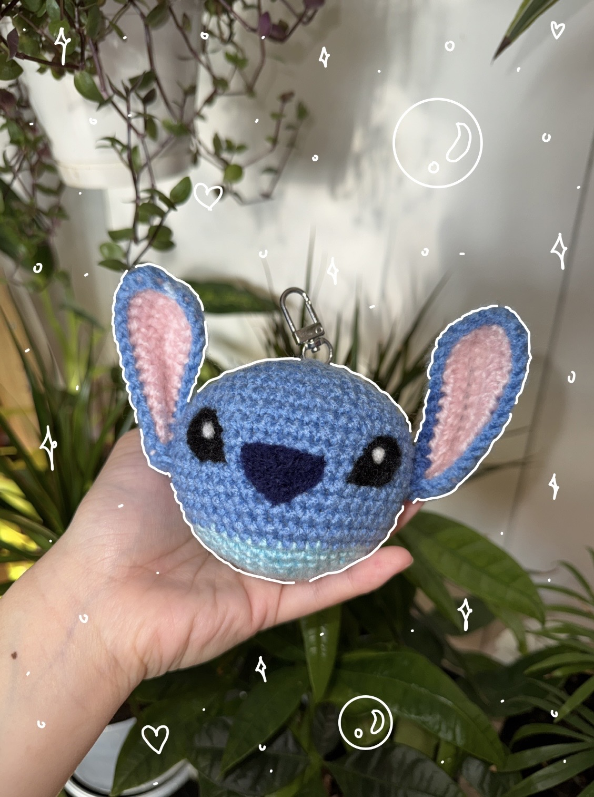

Averia Knots✧ Averia Crochet Studio ✧
Hi! Welcome to my colourful world of crochet 🧶✨.
From charming creations to unique gifts, let's weave some magic together! 🎉
Join me as I share my crochet adventures, tips, and tutorials.
Stay tuned for exciting projects, tips, and more.
Let's create something beautiful together! 💫
Ready to knot? Let's get crafty! →
Dislaimer ⚠️
Most of the patterns featured on this page are not my own.
They are created by talented designers whose work I deeply respect.
This account is intended purely for educational, inspirational, and guiding purposes
to help aspiring crocheters.
All rights to the original designs belong to their respective creators.
This page is not intended for selling the works or patterns.
If you love the patterns, please support the original creators by purchasing directly from them or
visiting their platforms.
Thank you.💕
About Me 🌸
Hi! I am Maria (she/her). I am 22 years old living in Finland.
I am currently a Business IT student.
I love combining creativity and technology.
Crochet is one of my favorite hobby, and I enjoy creating cute projects.
Nice to meet you! Let's get crafty!
Connect with me through
My Crochet Projects ✨
🌻 Sunflower Plant 🌻
Bright and cheerful crochet sunflower plant! Perfect pop of sunshine for any space. 🌻✨

⚔️ Satoru Gojo 🥷🏻
Unique and thoughtful present! Perfect for anime lovers! 🥷🏻✨

🍒 Cherry Keychain 🍒
Adorable and quick-to-make present! Perfect for adding a sweet touch to your keys or bag! 🍒✨

🐱 Cat Keychain 🐾
Purr-fectly adorable crochet cat keychain! Add some feline flair to your keys or bag. 🐾✨

🐆 Cheetah Lee 🐯
Fierce yet adorable crochet Cheetah Lee keychain! Add some wild K-pop vibes to your keys or bag. 🐯✨

🐇 Rabbit Plushie 🐰
Sweet and snuggly crochet rabbit plush! Perfect for adding some handmade love to a little one’s life.🐰✨

🌻 Sunflower Keychain 🌻
Sunny and adorable crochet sunflower keychain! Perfect for adding a little sunshine to your keys or bag. 🌻✨

💃🏻 Doll 🙎🏻♀️
Beautiful crochet princess doll! Fit for royalty and perfect for adding a touch of fairytale magic to anyone’s day. 💃🏻✨

🐾 Paw Coaster 🐾
Cute crochet paw coaster perfect for adding a touch of charm to your table while keeping it paw-sitively protected! 🐾✨

🐱 Cat Beanie 🐱
Adorable crochet cat ear beanie perfect for adding some cute, cozy, and feline flair to your wardrobe! 🐱✨

🐙 Octopus Plushie 🐙
Adorable crochet octopus plushie! It’s the cutest little sea creature, perfect for cuddles or decor! 🐙✨

🐇 Bunny Plushie 🐰
Adorable crochet bunny plushie! It’s soft, cuddly, and the perfect little companion for anyone! 🐰✨

🤵🏻♂️ Wedding Dolls 👰🏻♀️
Beautiful pair of crochet wedding dolls! Perfect handcrafted present to celebrate love and togetherness. 👰🏻♀️🤵🏻♂️✨

🌻 Sunflower Hat 🌻
Adorable crochet sunflower hat! Bright, cheerful and perfect for adding a little sunshine to any outfit. 🌻✨

🎂 Cake 🎂
Adorable celebration cake! Perfect treat to mark a special moment without the calories. 🎂✨

🎀 Ribbon Hair tie 🎀
Sweet crochet ribbon hair tie! Perfect accessory for adding a touch of charm and elegance to any hairstyle. 🎀✨

💐 Flowers 💐
Beautiful crochet flowers! Perfect for brigthening up any space and bringing some handmade charm to your day. 💐✨

🐷 Pig Plushie 🐽
Adorable crochet pig head! Cute, quirky, and perfect for adding a touch of fun to your keychain, bag, or desk. 🐷✨

🌻 Sunflower Tote Bag 🌻
Adorable crochet sunflower tote bag! Bright, cheerful and perfect for adding a little sunshine to your everyday errands. 🌻✨

🐳 Couple Whales Keychain 🐳
Adorable pink and blue crochet whale keychains! Perfect little ocean buddies to add a splash of cuteness to your keys, bags, or gifts. 🐳✨

💙 Stitch Keychain 💙
Cute crochet stitch keychain! Perfect tiny companion to brighten up your keys, bags, or even your day. 💙✨

🌻 Sunflower Plant 🌻
Bright and cheerful crochet sunflower plant! Perfect pop of sunshine for any space. 🌻✨
✧ Sunflower Disk Florets ✧
(always slip stitch the last single crochet onto the first single crochet and chain 1 after each row)
Row 1: Create a magic ring, make 4 single crochets inside the ring = 4 stitches
Row 2: Increase in every stitch (i.e. two single crochets in one stitch) x 4 = 8 stitches
Row 3: Single crochet, increase (repeat 4 times) = 12 stitches
(make preferably two circles, brown and green for the back part) Remember to slip stitch at the end to finish the stitches.
✧ Sunflower Petals ✧
(12 stitches = 12 petals)
Using the disk florets that is made, connect the brown and green circle together by following the petal patterns below.
Slip stitch the yellow yarn onto one stitch (connecting the brown and green circles on top of one another)
For one petal:
1. On the same stitch, chain 2, double crochet, triple crochet, chain 1, slip stitch onto the last stitch of triple crochet, double crochet, chain one
2. Slip stitch onto the next stitch
Repeat 1 and 2 until you have created 12 petals in total.
Remember to fill the middle part of the sunflower with fillings before closing.
✧ Video Tutorials and Patterns ✧
✧ Pot and Soil 🪴 ✧
✧ Heart Leaves 🍃 ✧
⚔️ Satoru Gojo 🥷🏻
Unique and thoughtful present! Perfect for anime lovers! 🥷🏻✨
✧ Video Tutorials and Patterns ✧
✧ Satoru Gojo's head, hair, body and blindfold 🥷🏻 ✧
🍒 Cherry Keychain 🍒
Adorable and quick-to-make present! Perfect for adding a sweet touch to your keys or bag! 🍒✨
✧ Video Tutorials and Patterns ✧
✧ Cherry and leaves🍒 ✧
🐱 Cat Keychain 🐾
Purr-fectly adorable crochet cat keychain! Add some feline flair to your keys or bag. 🐾✨
✧ Video Tutorials and Patterns ✧
✧ Cat Keychain 🐱🐾 ✧
🐆 Cheetah Lee 🐯
Fierce yet adorable crochet Cheetah Lee keychain! Add some wild K-pop vibes to your keys or bag. 🐯✨
✧ Video Tutorials and Patterns ✧
✧ Cheetah Lee 🐯 ✧
This project involved felting.
🐇 Rabbit Plushie 🐰
Sweet and snuggly crochet rabbit plush! Perfect for adding some handmade love to a little one's life.🐰✨
✧ Video Tutorials and Patterns ✧
✧ Rabbit Plushie 🐰 ✧
🌻 Sunflower Keychain 🌻
Sunny and adorable crochet sunflower keychain! Perfect for adding a little sunshine to your keys or bag. 🌻✨
✧ Video Tutorials and Patterns ✧
✧ Sunflower 🌻 ✧
💃🏻 Doll 🙎🏻♀️
Beautiful crochet princess doll! Fit for royalty and perfect for adding a touch of fairytale magic to anyone’s day. 💃🏻✨
✧ Video Tutorials and Patterns ✧
✧ Doll Body 🙎🏻♀️ ✧
✧ Doll Head 💃🏻 ✧
✧ Doll Dress 👗 ✧
🐾 Paw Coaster 🐾
Cute crochet paw coaster perfect for adding a touch of charm to your table while keeping it paw-sitively protected! 🐾✨
✧ Video Tutorials and Patterns ✧
✧ Paw 🐾 ✧
🐱 Cat Beanie 🐱
Adorable crochet cat ear beanie perfect for adding some cute, cozy, and feline flair to your wardrobe! 🐱✨
✧ Video Tutorials and Patterns ✧
✧ Cat Beanie 🐱 ✧
🐙 Octopus Plushie 🐙
Adorable crochet octopus plushie! It's the cutest little sea creature, perfect for cuddles or decor! 🐙✨
✧ Video Tutorials and Patterns ✧
✧ Octopus 🐙 ✧
🐇 Bunny Plushie 🐰
Adorable crochet bunny plushie! It's soft, cuddly, and the perfect little companion for anyone! 🐰✨
✧ Video Tutorials and Patterns ✧
✧ Bunny Part 1 🐰 ✧
✧ Bunny Part 2 🐰 ✧
✧ Bunny Part 3 🐰 ✧
🤵🏻♂️ Wedding Dolls 👰🏻♀️
Beautiful pair of crochet wedding dolls! Perfect handcrafted present to celebrate love and togetherness. 👰🏻♀️🤵🏻♂️✨
✧ Dolls Body 👰🏻♀️🤵🏻♂️ ✧
The doll is around 10 cm tall.
✧ Dolls Feet 🦵🏻 ✧
Row 1: Create a magic ring then insert 8 single crochet inside the magic ring, slip stitch the last stitch to the first stitch, chain 1.
Row 2: Single crochet in each stitch, slip stitch the last stitch to the first stitch, lock then cut.
Make two but do not lock and cut the yarn for the second foot. Continue to the body...
✧ Dolls Body ✧
Row 3: From the second feet, chain 1, slip stitch onto first feet, chain 1.
Row 4: Continue with single crochet around both feet = 18 sc.
Row 5: 18 single crochets around.
Row 6: 18 single crochets around.
Row 7: 3 single crochets, increase (two double crochet in one stitch) * 3, 6 single crochets, increase (two double crochet in one stitch) * 3, 3 single crochets = 24 sc
Row 8:4 single crochets, half double crochet, double crochet, double crochet, half double crochet, 8 single crochets, half double crochet, double crochet, double crochet, half double crochet, 4 single crochets = 24 sc
Row 9: 24 single crochets around.
Row 10: decrease (one single crochet in two stitch) * 12 = 12 sc
✧ Dolls Head ✧
Row 11: increase (two double crochet in one stitch) * 12 = 24 sc
Row 12: 24 single crochets around.
Row 13: 24 single crochets around.
Row 14: 5 single crochets, increase (two double crochet in one stitch) * 2, 10 single crochets, increase (two double crochet in one stitch) * 2, 5 single crochets = 28 sc
Row 15: 28 single crochets around.
Row 16: 5 single crochets, decrease (one single crochet in two stitch) * 2, 10 single crochets, decrease (one single crochet in two stitch) * 2, 5 single crochets = 24 sc
Row 17: 24 single crochets around.
Row 18: decrease (one single crochet in two stitch) * 12 = 12 sc
Fill the inside of the doll.
Row 19: decrease (one single crochet in two stitch) * 6 = 6 sc
Row 20: close
✧ Video Tutorials and Patterns ✧
✧ Dress 👗 ✧
🌻 Sunflower Hat 🌻
Adorable crochet sunflower hat! Bright, cheerful and perfect for adding a little sunshine to any outfit. 🌻✨
✧ Video Tutorials and Patterns ✧
✧ Hat 👒 ✧
✧ Sunflower 🌻 ✧
🎂 Cake 🎂
Adorable celebration cake! Perfect treat to mark a special moment without the calories. 🎂✨
✧ Video Tutorials and Patterns ✧
✧ Cake 🎂 ✧
🎀 Ribbon Hair tie 🎀
Sweet crochet ribbon hair tie! Perfect accessory for adding a touch of charm and elegance to any hairstyle. 🎀✨
✧ Video Tutorials and Patterns ✧
✧ Ribbon 🎀 ✧
💐 Flowers 💐
Beautiful crochet flowers! Perfect for brigthening up any space and bringing some handmade charm to your day. 💐✨
✧ Video Tutorials and Patterns ✧
✧ Sunflower 🌻 ✧
✧ Rose 🌹 ✧
✧ Lavender ✧
🐷 Pig Plushie 🐽
Adorable crochet pig head! Cute, quirky, and perfect for adding a touch of fun to your keychain, bag, or desk. 🐷✨
✧ Video Tutorials and Patterns ✧
✧ Pig 🐷 ✧
🌻 Sunflower Tote Bag 🌻
Adorable crochet sunflower tote bag! Bright, cheerful and perfect for adding a little sunshine to your everyday errands. 🌻✨
Suggestions & Feedback 💬
Share ideas for future projects or ways to improve this site!